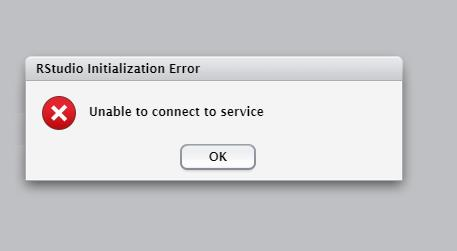
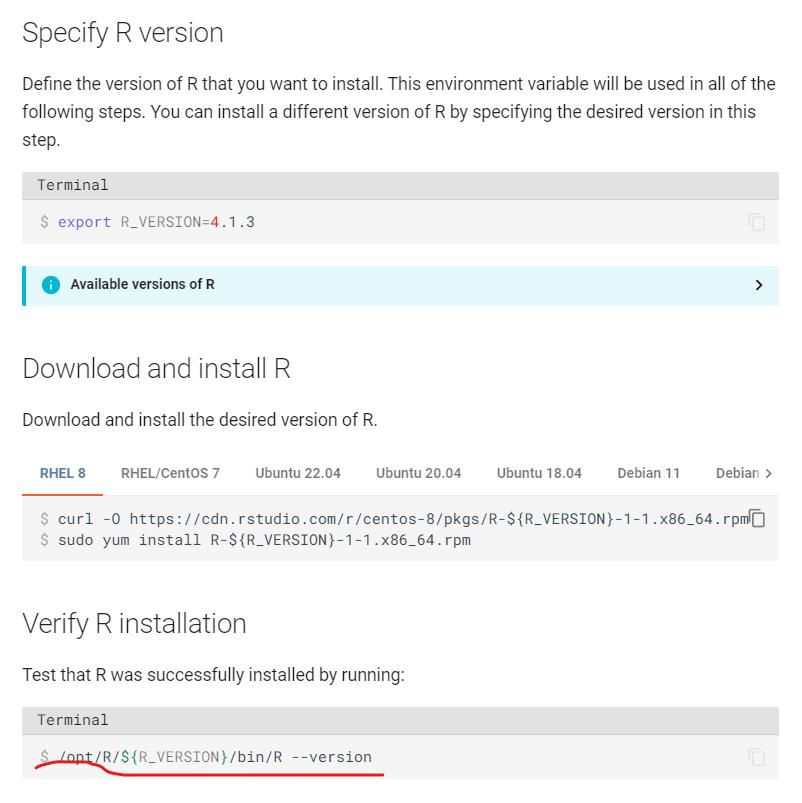
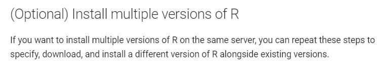

目的
很简单，服务器 rstudio-server 用的 R version 版本太老，想更新为 4.0 以后的版本
基本原则
查了一些资料，无非就是在 rstudio-server 的配置文件中指定新的 R (绝对路径)。虽然听起来挺简单的，但是实际操作中遇到了各种各样的问题，再加上身体抱恙，搞了两天，整个人都不好了，好在最后实现了。
实现过程
rserver 服务的启停
首先，要搞清楚 rserver 原来运行在哪个节点之下，用其他节点，你可能连 rstudio-server 命令都没有。
# 停止 rserver 服务
sudo rstudio-server stop
# 启动 rserver 服务
sudo rstudio-server start
# 查看 rserver 状态
sudo rstudio-server status这这一步，遇到的问题就是重启服务后，查看状态，显示8787端口被占用，然后查看8787端口的使用情况
lsof -i:8787确确实实看到了两个 rserver 命令在使用8787端口，无论怎样，这两个进程都停不下来。我想直接 kill 掉，但是考虑到在 root 命令下，谨慎为好，不好随便 kill/rm 东西，我就又查验了这两个 rserver 的来源
ps -ef | grep rserver发现这两个 rserver 是在 /usr/lib/rstudio-server/bin/rserver，这下我放心了，因为这确实来自于 rstudio-server，kill掉应该不会影响其他进程，然后我就 kill + 进程号 准备kill 掉这两个 rserver 进程。
不过万万没想到，运行之后，居然没 kill 掉，这下我傻了，然后根据错误的关键词 search 各种帖子，最后根据 sudo rstudio-server verify-installation error address already in use 这句找到了正确的解答：Troubleshoot RStudio Server Installation - verify-installation incorrectly reports server is running。
其实就是给 kill 加个参数 -9.关于 kill -9 可以自行查阅资料，man kill 里面对于 (9) 是这样描述的
it may be necessary to use the KILL (9) signal, since this signal cannot be caught帖子里关于这两个 rserver 进程的解释是，rserver 没有正确清除自身文件导致的。
到这里，rserver 的启停终于恢复了。
设置 server conf
⚠提醒：一下的操作和文件，均是在服务器 Rstudio-server 开放端口的节点下。我这里用的是 node2，不同的节点，设置是独立的。
rstudio admin guide 中关于配置 rstudio server 提到了几个文件
- /etc/rstudio/profiles
- /etc/rstudio/r-versions
- /etc/rstudio/rserver.conf
目前我经过测试，只有 rserver.conf 设置才会function，详细设置见 rstudio 官方手册。
问题是，服务器上 root 下面只有原来的一个老版本的 R，所以测试的时候，我就用我自己的用户下conda 安装的 R。rsession-which-r=/home/me/bin/R，结果重启服务显示：

对此，我觉得出现这个问题的原因:
- 个人的用conda安装的R对于 Rstudio-server 不完整，需要一些配置；
- Rstudio-server版本低，不兼容R4.0。
所以我打算是root下用 binary rpm 安装R4.0，用这个做R core，看看Rserver能不能运行。
Rserver 中对 install multiple version of R做了说明(https://docs.rstudio.com/resources/install-r/)，说最后安装的R在 /opt/R/${R_VERSION}/bin/里面，应该是不影响已有的R的。


所以就根据官方指南安装 R
root 下 R 的安装
本以为这一步很简单，结果不出意外，又出bug了，当我用下载的 binary R rpm 进行安装后，确实安装在了 /opt/R下面，不过查看 R 版本的时候出现问题了
$ /opt/R/4.0.3/bin/R --version
error while loading shared libraries: libgfortran.so.5: cannot open shared object file: No such file or directory刚开始没当回事，就直接配置 rserver.conf 重启服务了，发现连不上服务，得，这个问题跳不过去，接着解决。
报错说缺少 libgfortran.so.5，眉头一皱，觉得不是真的缺少依赖这么简单，于是又 google 找解答，在这里发现了正解Missing libgfortran and libreadline dependencies for R 3.6.2 on CentOS 7,原来是用错了 rpm 版本，OMG!!!
真的是哪里都能出问题，于是检查了服务器版本
$ cat /etc/*release
CentOS Linux release 7.5.1804 (Core)是 centos7 ，于是重新安装，这一次终于成功了，重启 rserver 服务，感人，R core 切换成功！！！
心得
历时两天得 R studio server 更换 R core 落下了帷幕，总之，先判断需求，必须要用，那就得硬着头皮搞，遇到问题多 google。
更进一步
其实，rstudio server 应该是可以根据 user 和 group 进行配置的，只不过还没弄明白，后面再花点心思搞一下。
收工~~~
2022.9.9
尝试按 user and group define R version，failed
继上次在 /etc/rstudio/profiles 中定义 user and group R version 失败后，在 Rstudio server configuration 中发现可能存在 multiple R versions 的总开关，
# Server Configuration File
r-versions-multiple=0结果在验证时
$ sudo rstudio-server verify-installation
Error reading /etc/rstudio/rserver.conf: unrecognised option 'r-versions-multiple'以为 r-version-multiple 是Rstudio-server 后来出现的 feature，所以按照官方更新步骤进行更新。
不过，仍然出现相同的问题。
烦死了 ..>_<..
同时指定多版本的 R version，目前还没有解决，就先这样吧，不折腾了
/usr/lib64/libstdc++.so.6: version `GLIBCXX_3.*.**’ not found 问题
之前在用 rstudio-server 进行安装 workflowr, Seurat 以及运行 ggplot2 的时候，总是遇到 /lib64/libstdc++.so.6: version 'GLIBCXX_3.4.21' not found 的问题，之前也没意识到具体是什么问题，其实直接搜索的话，就可以找到很多解答的。
根本原因就是 root 下的 gcc+ 升级后动态库没有更新，运行以下命令检查动态库：
$ sudo strings /usr/lib64/libstdc++.so.6 | grep GLIBC
GLIBCXX_3.4
GLIBCXX_3.4.1
GLIBCXX_3.4.2
GLIBCXX_3.4.3
GLIBCXX_3.4.4
GLIBCXX_3.4.5
GLIBCXX_3.4.6
GLIBCXX_3.4.7
GLIBCXX_3.4.8
GLIBCXX_3.4.9
GLIBCXX_3.4.10
GLIBCXX_3.4.11
GLIBCXX_3.4.12
GLIBCXX_3.4.13
GLIBCXX_FORCE_NEW
GLIBCXX_DEBUG_MESSAGE_LENGTH检查输出结果中有没有报错出现的文件（一般报错了就是没有）。
然后
find / -name 'libstdc++.so*'找一个高版本的 libstdc++.so.6.*.**，在 stringr 检查一下动态库有没有，如果有的话，就用这个。
然后，上述报错为例，原来的版本位置在 /lib64/libstdc++.so.6，将新版本的 cp 到路径下，将原来的版本改名备份
$ mv libstdc++.so.6 libstdc++.so.6.bak创建新的软连接，指向刚拷贝的库
ln -s libstdc++.so.6.0.21 libstdc++.so.6参考文档：
- [ImportError: /lib64/libstdc++.so.6: version `GLIBCXX_3.4.21‘ not found](https://blog.csdn.net/BurningSilence/article/details/112919308)
- https://itbilu.com/linux/management/NymXRUieg.html
提醒一下，在 Rstudio-server上安装 R 包不一定能成功，即使在你指定了安装路径的情况下。这个时候，可以尝试在 服务器终端打开R进行安装，将 R 包安装在 Rstudio-server 所用的 libPath 下面。